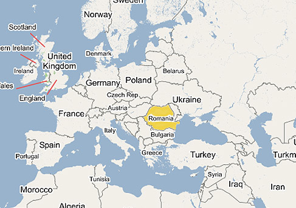

Mia
Mia
Did you know that...?
Romania's National Day
is celebrated on
the 1st of December.
Romania became a member
of the European Union
in 2007.
The Peleș Castle is a
Neo-Renaissance castle
buit by King Carol I
between 1873 and 1914.
Bran Castle is the home
of Count Dracula,
who was inspired by
Vlad Țepeș or known
as Vlad the Impaler.
Nadia Comăneci is the
first gymnast to be
awarded a perfect
score of 10.0
at the Olympic Games.
There's a Merry Cemetery
in the village of
Săpânța with
colourful tombstones.
Romania is one of the
most religious
countries in the EU
and 81% of population
is Christian Orthodox.
Transfăgărășan road
was featured in the
the British TV show
Top Gear in the 1st
episode of Series 14.
Host Jeremy Clarkson
proclaimed that the
Transfăgărășan was "the
best road in the world".
In the period between
the two World Wars,
the city's elegant
architecture and the
sophistication of its
elite, earned Bucharest
the nickname of
"Little Paris".
Palace of the Parliament
was constructed
between 1984-1997
and it is the second
largest building
in the world
after The Pentagon.
In Romania there are
several ethnic groups:
88.9% Romanians
6.1% Hungarians
3.0% Roma
0.2% Ukrainians
0.2% Germans
Our currency leu,
which means "lion" in ro,
dropped 4 of its zeros
in 2005 and is being
produced in plastic.
Romania was under
communist regime ruled by
Nicolae Ceaușescu
from 1965 until the
Revolution in dec 1989.
The movie "Cold Mountain"
was filmed mostly in
Romania - Brașov area.
Romania is one of the
countries with the
fastest fixed internet
connection speeds
with an average of
85 Mbit/s and also
one of the cheapest,
with 1 Gbit/s internet
connections being sold
for around 8 euros/month.
Due to the high cybercrime,
my small hometown city
has been nicknamed
Hackerville.
Let's travel a bit through
the lands and traditions of
my beloved home country Romania!!!
It's in Europe and it's quite big ^^

We have it all - Carpathians mountains, huge forests, hills, a lot of countryside and the Black sea.

Peleș Castle
Bran (Dracula's) Castle
Countryside landscape
Bran (Dracula's) Castle
Countryside landscape
Round village Charlottenburg
Danube delta
Danube delta

Transfăgărășan road
Transfăgărășan road
Palace of the Parliament - Bucharest
Arch of Triumph - Bucharest
Sibiu
Cluj-Napoca - my university town
Brașov
Gothic church - Brașov
Brașov
Ski in Poiana Brașov

Rope street - Brașov
Bigăr cascade - Caraș-Severin
Rock sculpture of Decebalus